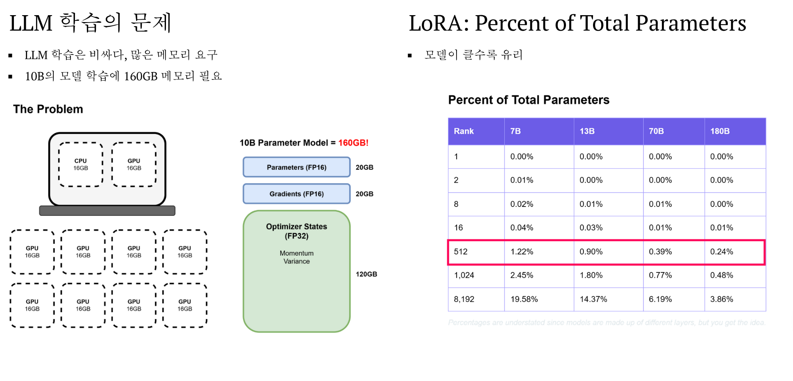

p183. LoRA가 줄이는 비용과 표의 조건
기준: 원문 PDF 파일 순서 183쪽. 이 문서는 원문을 열지 않고 읽을 수 있는 페이지별 해설이다.
원문에서 확인한 내용
왼쪽은 10B 모델의 FP16 parameters 20GB, FP16 gradients 20GB, optimizer states 등의 120GB를 더해 160GB로 나타낸다. 오른쪽은 rank와 모델 규모별 LoRA 파라미터 비율 표이며 rank 512 행을 강조한다.
아래 그림에서 본문에 설명한 숫자·경계·화살표의 대응을 확인하자.

의미·조건·보충
표의 512행은 7B 1.22%, 13B 0.90%, 70B 0.39%, 180B 0.24%다. 이 비율은 원문 예시이며 대상층 수가 빠져 독립 재현은 못 한다. 120GB는 예컨대 FP32 master weight와 두 optimizer 누적량 각 40GB라는 가정으로 설명할 수 있지만 원문의 모든 구현 조건이 확인된 것은 아니다. 활성값·임시 버퍼까지 포함한 보편 총량으로 외우지 않는다.
앞뒤 연결
분류의 목적에서 비용 문제로 초점을 옮긴다. 다음 쪽은 full fine-tuning과 PEFT를 같은 항목으로 비교한다.
작은 확인 활동
W가 4×6이고 rank가 1이면 W 원소 수와 LoRA 원소 수는?
예상 결과와 해설
24와 1×6+4×1=10이다. 학습 원소 수 감소와 GPU 총 메모리 감소율은 같은 값이 아니다.
원문 표와 각주의 범위
다음은 그림의 비율을 전사한 값이다. 새로운 실험 결과가 아니다.
| rank | 7B | 13B | 70B | 180B |
|---|---|---|---|---|
| 1 | 0.00% | 0.00% | 0.00% | 0.00% |
| 2 | 0.01% | 0.00% | 0.00% | 0.00% |
| 8 | 0.02% | 0.01% | 0.01% | 0.00% |
| 16 | 0.04% | 0.03% | 0.01% | 0.01% |
| 512 | 1.22% | 0.90% | 0.39% | 0.24% |
| 1024 | 2.45% | 1.80% | 0.77% | 0.48% |
| 8192 | 19.58% | 14.37% | 6.19% | 3.86% |
각주는 실제 모델에 여러 종류의 층이 있어 이 비율이 과소 표시된 근사라는 취지다. 0.00%도 반올림된 값이지 학습 파라미터가0개라는 뜻이 아니다. 정확한 대상층·모델 구조가 없어 이 표를 재계산한 결과로 표시하지 않는다. 자기 모델에서는 Σ_대상층 r(d_in+d_out)/전체 파라미터 수로 계산한다.
원문 optimizer 상자는 momentum·variance를 적고120GB로 표시한다. 10B 원소에 FP32 두 상태만 계산하면80GB다. 추가 master weight40GB까지 포함하면120GB가 되므로 원문 라벨만으로 실제 메모리 항목을 확정해서는 안 된다.